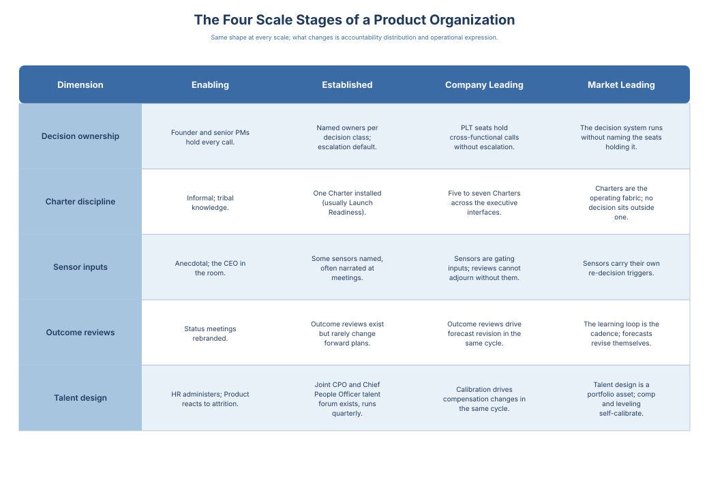

Vision to Value · 8 / 16
Chapter 6: People at Scale
The previous chapter ended with a decision system that can watch itself. It cannot staff itself. Every move that chapter made, the shift from doing to designing, the separated teams, the seams built before they tore, the layer that reads the machinery, comes down in the end to a person. Someone has to sit in the seat and carry the ambiguity the seat was built to hold. The design is real. It is also inert until someone occupies it.
Three times already this book has made the same move: scaling looked like a capacity problem and turned out to be a design problem, first with structure, then with the interfaces that break first, then with observability. People is the fourth time. And the reflex is always the same: when the org feels stretched, hire more and call the org chart the design. It isn't. Promoting someone is not the same as growing the system. Each rung of the talent ladder should be defined by the altitude of decision a person absorbs, not the years it took to climb. A promotion that does not lift someone to a harder class of decision is a pay raise, not a structural change, and an organization that cannot tell those two apart is adding headcount while its decision system stays exactly the size it was. That is what it means to say leveling is decision-rights design.
So the question here is not "how do we manage people as we grow." That is the soft-skills framing this book argues against. It is the harder question the structural moves leave open: who, specifically, can hold each level of decision the design now requires, and what has to stay true as the organization doubles for the answer to keep being yes. The interface is still the work. At this altitude it runs through the Chief People Officer. The surfaces that interface governs, leveling, comp-band integrity, hiring discipline, calibration, are not HR paperwork that Product receives and signs. They are decisions the product organization helps design.
The Role Map named the nine function seats by what each one decides. Three more roles scale a different way. They are not seats; they are rungs of altitude. They exist because ambiguity has to be absorbed at the layer that can settle it without kicking it upstairs. Each rung below is defined by the size of the problem it owns and by the calls it carries that the rung beneath it cannot.
Group Product Manager
Runs a multi-PM problem space; owns decisions too large for a single PM but below the portfolio layer. First layer where PM-to-PM handoffs and shared success criteria become someone's job.
Lead Product Manager (Staff PM)
Senior Individual Contributor who carries the hardest ambiguous decisions in a domain and models the craft bar. The scaling antidote to overloading Group PMs with tradeoffs that should live one layer down.
Director of Product Management
Owns the operating layer for a team of PMs and Group PMs: quality bar, charter templates, re-decision discipline, PM leveling, and the forums where cross-team tradeoffs resolve. The role that makes scale hold, and the one most often missing from role maps of scaled orgs. The PM-Director also holds the Product Management seat on the PLT (per Chapter 3) and owns hiring authority across the PM function — both load-bearing for the director-altitude decision system the rest of this chapter builds on.
Sidebar: The Hardest Evolution in Product Leadership
The talent ladder above defines each rung by the altitude of decision it absorbs. This is what crossing one rung actually costs the person who crosses it.
Most Directors of Product were promoted because they were high-performing PMs. The promotion is usually framed as a reward. It is not. It is a re-role, and the evolutionary pressure that comes with it is the hardest one most product leaders will face in their career.
The work that earned the promotion, which was shipping features, resolving tradeoffs in the room, and being the person teams turned to when the call needed to be made, is now the work the Director is being asked to stop doing. Stopping is harder than it sounds. The Director's identity, feedback loops, and sense of competence were built on that work. Every time they step into a PM-level decision, the team feels helped, the peer leaders notice, and the Director gets a small hit of the old confidence. Every time they stay out, they feel less useful, less visible, and less sure of their value.
This is what evolutionary pressure feels like from the inside: the behaviors that made you effective at the previous altitude are precisely the behaviors the new altitude requires you to stop. The pressure is real because the old behaviors still work; they just no longer scale. The Director is being asked to trust that a different behavior, designing the decisions their team makes repeatedly, will matter more. It will. But it matters less visibly, on a longer delay, and through other people. That is the trade the next altitude demands, and it is not optional.
The same pressure recurs at each altitude change: Individual Contributor to Director, Director to VP, VP to CPO. The Director step is where the pattern is first encountered without awareness. Every subsequent altitude change is the same move, done with eyes open.
The leaders who make this evolution describe the first ninety days as "feeling like I am not doing my job." They are. They are just doing the new one. The Directors who never step into the pressure stay as super-PMs in Director titles, and their teams stop growing.
If you are in this transition and reading this, name the feeling. Tell your VP you are in it. Ask for a monthly check-in on whether you are doing Director work, not PM work dressed differently. The discomfort is not a signal that you are failing. It is a signal that you have started.
The Talent Dimension of Scale
Scaling without drifting is, in large part, a talent problem, and the Chief People Officer is the executive peer the CPO most often underinvests in. The interface this chapter specifies runs on a handful of reads the product organization has to keep current every quarter. Five are named below. Each one is a decision the CPO and the Chief People Officer make together, not a report Product files after the fact.
Ratios read against portfolio shape, not enterprise benchmarks. Two ratios surface to the Chief People Officer quarterly: PM-to-product-engineering (PMs per pod or per ten engineers) and Director-to-PM span (ICs per PM-Director). Read the first against portfolio shape: platform-weighted work carries thinner PM density than applied product, so benchmarking against a peer with a different mix is benchmarking against the wrong number. Read the second for scale compounding: a Director with twelve ICs runs calibration; with six, development; with three, an overhead cost the organization has not confronted. Both are empowerment inputs, not OKR targets. When either breaches its band by 20% for two consecutive quarters, the Chief-People-Officer-CPO talent charter reopens and the interface sizes the correction. The alternative, treating ratios as Product's internal concern, reproduces the Principle 2 failure: talent design absorbed into HR administration after the decision is functionally made. Principle 2 — Alignment Beats Consensus — names alignment as the deliverable: shared understanding of direction, priorities, and success criteria, held by named owners on the record. Talent architecture is one of the surfaces where alignment is most often substituted with consensus and then quietly converted to HR administration; the chapter's reads exist to keep that substitution from happening.
Comp-band integrity is the field each side audits for the other. A product-band grid that reads symmetric on paper is pricing a different job whenever the bands came from a function whose work does not look like Product's. The common failure is importing an engineering grid with a multiplier and treating the multiplier as the work product. The real work product is the band-to-job-level mapping, the competitive-hire benchmark set, and the exception rate, all maintained in the Chief-People-Officer-CPO talent charter. Three signals reopen it: competitive hiring against named roles with named comp patterns, exception rate above threshold for two cycles, and leveling-calibration drift. Any one fires the re-decision. The revision translates to a pay change in the same cycle, or the calibration did not happen.
Hiring discipline breaks in three places. First, the scorecard: if a team cannot name it before the requisition opens, the hire is backfilling headcount rather than filling a role, and the calibration forum inherits the mismatch three quarters later. The fix is a scorecard gate at requisition open, owned by the hiring manager and signed by the PM-Director. Second, the interview loop: Product interviewing fails when the loop tests irrelevant domain knowledge or rewards articulate performers over evidence-bearing candidates. The PM-Director owns the rubric; the recruiter enforces calibration; the Chief People Officer audits for bias drift quarterly. Third, offer negotiation: when a candidate negotiates outside the band, the recruiter surfaces the exception in the same conversation, and the exception rate rolls up to the quarterly forum. Offers negotiated ad hoc without audit trail are how comp bands drift implicit within six months.
Sidebar: PM Leveling as the Calibration Surface
PM leveling is where the CPO-Chief-People-Officer interface either compounds trust or drifts into HR administration. The surface carries five levels that scale with decision altitude, not with tenure: PM, Senior PM, Principal PM, PM Director, VP Product. Each level is defined by the ambiguity the role absorbs, the dependencies the role resolves without escalation, and the portfolio altitude the role operates at, in that order.
PM operates at feature and squad altitude. Resolves execution ambiguity, surfaces scope tradeoffs upward. Comp-band anchored to engineering-Individual Contributor peer band at matched years. The failure mode at this level is promotion for delivery velocity without evidence of judgment under scope ambiguity, which inflates the band and compresses Senior.
Senior PM operates at pod and workstream altitude. Resolves cross-pod dependency ambiguity, carries the first round of customer-evidence synthesis. The failure mode is extending the level to cover weak Principal candidates, which the quarterly calibration forum catches if the exception rate gets read.
Principal PM operates at product-line altitude. Resolves strategy-to-delivery ambiguity without Director escalation, and is the first level that carries peer accountability for portfolio outcomes. Principal is not "senior Senior"; it is the first Individual Contributor level where the work is portfolio shape, not feature shape.
PM Director operates at multi-product-line or functional-manager altitude. Resolves organizational-scale ambiguity (team design, career framework enforcement, bet-portfolio tradeoffs for a line of business). Director span below six ICs is an overhead cost; span above twelve is a calibration role only.
VP Product operates at portfolio altitude. Resolves strategic-bet ambiguity, owns the Product function's board-facing commitments, and installs the executive interfaces Chapter 7 describes. VP is a band, not a title inflation.
The Chief-People-Officer-CPO talent charter records each level's scorecard, the comp-band anchor, and the promotion-evidence requirements at each boundary. A PM leveling grid that cannot be reconstructed in thirty seconds by someone who was not in the room is a grid that has already drifted.
Psychological Safety and the Compliance-Without-Learning Failure Mode
Compliance without learning reads as culture but is structural. A product organization that meets its retention floor, runs calibration on cadence, and still produces leveling decisions the comp committee quietly reverses the year the market turns is complying with the process while refusing to learn from what it surfaces. The tell is a quarterly forum where every exception is approved, every promotion defended, every attrition spike attributed to cultural climate rather than structural gap. The forum is running; the learning is not.
Psychological safety in a product organization is narrower than the version most readers know. The broad one (Edmondson, Project Aristotle) is the freedom to take an interpersonal risk anywhere in the company, and it belongs to the Chief People Officer. The version this book cares about is that same freedom inside one room: the calibration forum. It is the condition under which a PM-Director can defend a weak promotion case and hear, out loud, that the evidence is weak. It is the condition under which a Principal PM can surface a strategy-to-delivery gap without it landing as a performance concern. And it is the condition under which a VP Product can tell the CPO a committed bet is one cycle from breach, without the conversation turning into a question about the VP’s judgment. The interface creates the conditions for that. The culture absorbs it.
Calibration-Driven Performance Management
Performance management drifts toward two failure modes. Calendar-driven review (annual or semi-annual) creates a feedback lag longer than the PM's decision-evidence window, making the review a synthesis of memory rather than evidence. Continuous-feedback-without-calibration lets individual managers apply their own standards until the distribution drifts within two cycles. The correction is calibration-driven performance management, anchored to the quarterly forum.
Four inputs feed the PM performance record, maintained by the PM-Director and audited by the Chief People Officer: decision-quality evidence against the PM's bets (from the portfolio record), shipped-work evidence against committed windows (from the roadmap record), customer-evidence synthesis quality (from the discovery record), and peer-calibration signal (from structured 360s). All four are structural inputs; the subjective read that sometimes replaces them is the failure mode the forum exists to catch.
Promotion defense uses the record, not its summary. A PM-Director defending a Principal promotion reads from the four input classes; if the defense cannot be reconstructed in thirty seconds by a PM-Director who was not in the squad, the discipline has not been met. The same hygiene rule as the Board Bet Review Charter, at the talent altitude.
The People Are Where the Design Is Tested
The four things this chapter has worked, the talent ladder, leveling, psychological safety, and calibration-driven performance management, are not four topics. They are one argument seen from four sides. The argument is this: the talent system is the decision system in its most fragile form. A charter can be written once and run for a year. A person has to be decided again every cycle: promoted or held, banded or rebanded, trusted with more ambiguity or kept where they have proven themselves. People are the part of the decision system you re-decide most often. That is exactly why it drifts the fastest, and why it is where design discipline either holds or quietly stops.
Four connections make the argument concrete. First, take leveling. When the Sidebar defines each level by the ambiguity it absorbs and the dependencies it settles on its own, it is not describing seniority. It is handing out the right to decide. A Principal PM who resolves a strategy-to-delivery call without going to the Director has a decision right a Senior PM does not, and the comp band is just the receipt for that grant. So leveling is decision-rights design wearing a pay grid. Get it wrong and the rights land in the wrong hands no matter what the org chart says: a strategy call falls to someone who cannot carry it, or escalates to someone who never should have had to take it.
Second, take psychological safety, in the narrow form this chapter defines. A re-decision trigger only works if someone can reopen a committed call when the evidence turns, and do it without the reopening reading as failure. The calibration forum needs the same thing: a PM-Director who can defend a weak promotion case and hear, out loud, that the evidence is weak; a VP Product who can tell the CPO a committed bet is one cycle from breach. Take that safety away and the trigger never fires. The bet drifts. The promotion goes through. The organization follows the process while refusing to learn from what the process turns up. So safety is not a soft add-on to the decision system. It is the condition that makes the system's most important move, reopening a call, possible at all.
Third, the ladder and the Role Map are the same instrument read on two different axes. The Role Map answers which seat owns a decision. The ladder answers which level can hold a decision of a given ambiguity. That makes the ladder decision altitude made into rungs. Design one without the other and you get seats that belong, on paper, to people who cannot carry the altitude the seat now runs at. That is the headcount trap again, this time wearing titles instead of bodies.
Fourth, hiring decides the question leveling cannot reach. Leveling hands decision rights to the people already inside; the interview loop decides who gets in at all. So the loop sets the ceiling on every decision you will ever be able to distribute. Call it decision-rights pre-allocation: the grant is made at the offer, not the promotion. This is the connection the hiring-discipline passage sets up and the org chart hides. A scorecard a team cannot name before the requisition opens is not a hiring document. It is a decision left unmade, about what level of ambiguity the new seat will be trusted to hold, settled by accident by whoever happens to sit in the loop that quarter. An interview loop that rewards smooth talkers over candidates who bring evidence is not a culture problem; it is a leak. The right to carry strategy-to-delivery ambiguity goes to someone who can describe the work but cannot do it, and the leak never shows up in the loop. It shows up two or three quarters later, as a Principal PM who escalates the calls a Principal is supposed to settle. The fix the chapter names, a scorecard signed by the PM-Director before the requisition opens, is not process hygiene. It is the talent system refusing to hand out a decision right before it has decided the right exists. Who you let in determines what you can distribute, and the interview loop is where that gets either designed or abdicated.
Getting this wrong has a measurable shape and a predictable delay. A bad interview loop does not fail at the offer. It fails at the calibration forum two or three quarters later, when the hire who interviewed as a Principal escalates the strategy-to-delivery calls a Principal is supposed to settle, and the PM-Director who signed the scorecard is now defending a promotion case the evidence will not support. The delay is the trap. By the time the failure surfaces, the loop that produced it has run a dozen more times against the same flawed rubric. An organization that only audits its interview loop after a bad hire is reading the signal far too late, exactly the lag the five signals exist to beat, and it pays the full mis-leveling cost the whole time the signal sat unread.
These four connections share one property the chapter has been building toward, the property that lets you read the talent system instead of just feeling it. Calibration does for the talent system what the five signals do for the structure: it reads the machinery before the outcome arrives. The previous chapter closed on a decision system that can watch itself through five signals, all derivable from records the organization already keeps. The talent system has the same kind of window, and it is the quarterly calibration forum. Four things tell you the talent system is drifting: an exception rate that climbs cycle over cycle, leveling that no longer calibrates across teams, ratio bands that breach for two quarters running, and a promotion case nobody can reconstruct in thirty seconds. These are not HR metrics. They are to the talent system what decision latency and re-decision frequency are to the structure, early reads on the machinery. And they fail the same way the structural signals fail when no one reads them: the bet drifts because no signal fired, and the mis-leveled hire compounds because the exception rate got approved instead of read. A forum where every exception is waved through is the talent-system version of a calcified charter, running on cadence and learning nothing. The forum is the instrument; reading it is the discipline. Install the five structural signals and leave the calibration forum to run itself, and you have built observability into half your decision system while leaving the other half, the half you re-decide every cycle and that therefore drifts the fastest, to drift unwatched.
This is why the Chief People Officer is the executive peer the CPO most often underinvests in. The relationship is not a service desk, where Product files requisitions and HR fills them. It is joint design work over the very surfaces that decide whether the structural moves of the previous chapter have anyone able to occupy them. When the ratios breach their bands, when comp bands drift, when the interview loop keeps rewarding smooth talkers over candidates who bring evidence, the failure does not show up as a talent problem. It shows up two or three quarters later as a decision-quality problem, because the seat the design created got filled by someone the talent system had leveled wrong.
The Emotional Cost. The first time I sat in a calibration forum the VP HR ran, not as a service recipient receiving HR's call, but as a peer whose Product line had to defend its own leveling, comp bands, and promotion exceptions in front of the executive grid, I understood what this chapter was naming. The market turned that year. The conversations were harder than the year before. The seat was lonelier than I had expected. Six months later, the comp bands we had defended were still appealable, because they were written down. That is the cost, and the chapter exists to name the seat, not to soften it.
Vision to Value Toolkit (Chapters 5-6)
The exercises below span both chapters: the structural design of scale and the people who occupy the seats that design creates.
Applying Scaling Discipline to Preserve Decision Quality
Purpose: diagnose whether growth is amplifying value or amplifying noise, then design the smallest structural changes that restore coherence. This toolkit is about decision systems, interfaces, and leadership leverage, not org charts.
Scaling Readiness Scan
Pick one product area that has recently added headcount or teams.
Answer:
- Where has coordination increased faster than outcomes
- Which decisions became slower after adding people
- What work exists only to reconcile inconsistent priorities
Signal of maturity:
You can name the specific interface that created the drag, not just the symptom.
Decision Bottleneck Map
List decisions that are:
- Repeatedly escalated
- Frequently revisited
- Chronically delayed
For each, ask:
- Is the bottleneck information, authority, or confidence
- Is the decision reversible or not
- What rule would prevent escalation next time
Outcome
A short list of decision rules you will publish and enforce.
Portfolio Tradeoff Drill
Write your current top 10 initiatives across teams.
- Now force three tradeoffs:
- Stop one initiative entirely
- Delay one by a full quarter
Cut one to an MVP that answers a single risk question
Then record:
- Who made the tradeoff
- What evidence justified it
- What you will measure to confirm it was right
Signal of maturity:
Tradeoffs are explicit, owned, and measurable.
Platform as Product Check
If you have a platform team, answer:
- Who are the platform customers
- What outcomes is the platform accountable for
- What are the service boundaries and escalation rules
- What is the planning ritual where product and platform negotiate commitments
Example: a monthly Platform Intake Council, co-decided by the VP of Platform and the VP of Product with the VP of Product accountable for the prioritized intake commitment and the VP of Platform accountable for the capacity envelope, chaired by Product Operations. Required inputs: ranked product-line asks with business-case framing (product-line PMs); current platform capacity and technical debt position (Platform Engineering); cross-line dependency graph and last-cycle outcome deltas (Product Operations). Output: a prioritized intake commitment with explicit "not this cycle" list and a named re-decision trigger.
If you do not have a platform team, answer:
- Where are shared capabilities creating hidden dependencies today
- What would you centralize now to reduce duplication next quarter
Go-to-market Integration Check
Pick a recent launch.
Ask:
- Were positioning and adoption assumptions considered before build commitments
- What go-to-market constraint changed the roadmap late
- Which recurring joint decisions would have prevented the surprise
Commit to one ritual for the next launch
A cross functional launch review, a weekly readiness checkpoint, or a single written launch brief.
Leadership Leverage Audit
Rate the product leadership team, not individuals, 1 to 5 on:
- Clarity of portfolio tradeoffs
- Quality of decision rules and escalation thresholds
- Consistency of outcome standards across teams
- Ability to stop work
Strength of decision feedback mechanisms into strategy
Pick one capability to improve in the next 30 days.
Scale-Stage Self-Identification Diagnostic
For the VP Product running a scaling product organization and the PLT Director whose cohort is absorbing the cost of the next altitude: before you install the next structural move, place your organization on the maturity curve. The curve has four stages, and the wrong install at the wrong stage is one of the most common scaling failures named in this chapter.
For each dimension, mark which description best matches your organization today:
Decision ownership. • Enabling: Founder + senior PMs hold every call | Established: Named owners per decision class, escalation default | Company Leading: PLT seats hold cross-functional calls without escalation | Market Leading: The decision system holds calls across leadership transitions
Charter discipline. • Enabling: Informal; tribal knowledge | Established: One Charter installed (usually Launch Readiness) | Company Leading: Five-to-seven Charters across the executive interfaces | Market Leading: Charters are the operating manual the next CPO inherits
Sensor inputs. • Enabling: Anecdotal; CEO-in-the-room | Established: Some sensors named, often narrated at meetings | Company Leading: Sensors are gating inputs; reviews cannot adjourn without them | Market Leading: Sensors carry their own audit cadence and re-decision triggers
Outcome reviews. • Enabling: Status meetings rebranded | Established: Outcome reviews exist but rarely change forward plans | Company Leading: Outcome reviews drive forecast revision in the same cycle | Market Leading: The learning loop is observable on the system itself, not only on the bets inside it
Talent design. • Enabling: HR administers; Product reacts to attrition | Established: Joint CPO–Chief People Officer talent forum exists, runs quarterly | Company Leading: Calibration drives comp changes in the same cycle | Market Leading: Cohort retention is a portfolio-level read, not an HR concern
Where the rows mostly cluster names your stage. If three or more rows land at the same level, that is your dominant stage. The right install work is the next-stage capability on the row your organization is weakest in — not the row you are already strongest in. The chapter's three structural moves and the talent-architecture passages sequence the installs the diagnostic surfaces.

What you will likely find: on the Scaling Readiness Scan, the honest answer to "where has coordination increased faster than outcomes" is the interface between two teams whose leaders are both high-performing and whose relationship is "fine." Fine is the word the organization uses when an interface has never been designed and the friction between the teamshas been absorbed as a cultural cost instead of named as a structural decision the organization deferred. Every launch that crosses that interface pays the deferred decision again. Count the launches per quarter. That is the cost of the interface you have not yet designed.
The audit names the pattern in the abstract. What follows is the author's account of carrying it concretely, across seventeen years of seats where the pattern compounded slowly and then suddenly. The note closes Chapter 6 the way the chapter ought to close: with the cost of the work, not the prescription for it.
A Note From the Author — Looking Back
A confession, from the other side of seventeen years of running product organizations at enterprise altitude: the scaling pathologies this chapter names are not hypothetical. Every one of them has landed on my desk, many times, because the first time I saw them, I treated them as operational friction rather than structural inheritance. By the time I had matured into the Director role, I started noticing them for what they were. In time, I learned to unlock the interface and deal with them correctly.
The hardest lesson was that the scaling work the organization needed me to do was not the work the organization rewarded me for. The rewarded work was the shipped commitment, the closed deal the product enabled, the OKR executive management read on a slide. The necessary work was the interfaces built in the quiet quarters, usually at the end of Q4 and the beginning of Q1, when no new commitments shipped, no new deals created, and the OKRs held flat. The necessary work compounded in the second year. The rewarded work compounded in the first. The gap between them was where the organizations I led either grew into the discipline this book describes, or did not.
The cost of missing that distinction has a specific shape. As a PM, and later as a Director, I shipped features without customers explicitly waiting for them, and I watched the ones that did not earn usage rot in production: bugs never fixed, code path never maintained, the feature useless in the medium term and still carried on the engineering team's back. When you become a VP and your signature covers hundreds of engineering years, you pay for all of it at once, every unused feature, every unidentified bug in a code path no one touches, every great thing that was built and never used. That is the moment you push hard on MVP value, and that is the moment your directors and PMs, who have not yet paid the cost, feel you are the obstacle. The discipline is to hold the line anyway, because the tax you are refusing to pay is the one your earlier self paid and did not recognize.
What this chapter describes is the discipline as I learned to recognize it, over time, under pressure, from inside the roles where the pressure is greatest. The interface is the work. The commitment is the outcome. The cost is paid out of executive credibility. The compounding is the reason the cost is worth paying.